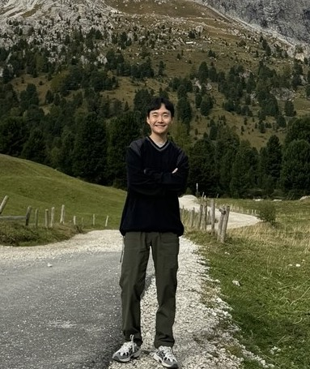

DongGoo Kang
Vision Part Lead @ Smilegate
Computer Vision · Graphics AI · Vision-Language Models
I am a Ph.D. with extensive experience in Computer Vision, Graphics AI, and Vision-Language Models. My work focuses on bringing AI into the 3D world—bridging perception and generation to create intelligent, immersive digital environments.
I currently lead the Vision Part at Smilegate, building large-scale 2D/3D generative vision systems for games. I received my Ph.D. in AI Imaging from Chung-Ang University, advised by Prof. Joonki Paik. Feel free to reach out by email.
News
- Jan 2026 Became Vision Part Lead at Smilegate, leading large-scale 2D/3D vision serving for in-game AI.
- Feb 2025 Completed my Ph.D. in AI Imaging at Chung-Ang University.
- Sep 2024 VLM-HOI accepted at ECCV 2024.
- Aug 2024 Received the Best Internship Award at NC AI (NCSOFT).
Articles
- Loading…
Experience
Vision Part Lead · Smilegate
Large-scale 2D/3D vision serving for in-game AI.
- Designed and scaled production serving systems for 2D/3D generation.
- Managed H200 GPU clusters with TensorRT optimization, quantization, and low-latency inference pipelines.
- Handled 7 TB+ datasets and model deployment in closed-network environments.
- Collaborated with Unreal Engine 5 teams on in-game 2D/3D asset integration.
Research Scientist · Smilegate
AI Center — Creative AI Team. 3D asset generation.
Research Intern · NC AI (NCSOFT)
Graphics AI Lab — AI Texturing Team. Advancing 3D texturing and UV mapping.
- Applied latent video generation models to overcome the limitations of traditional texturing.
- Integrated ControlNet into a vid2vid framework for geometry-aware texturing.
- Used positional encoding to improve accuracy and consistency in UV inpainting.
Researcher · Chung-Ang University
Education
Ph.D. in AI Imaging · Chung-Ang University
GPA 4.5 / 4.5. Advisor: Prof. Joonki Paik.
Image Processing and Intelligent System (IPIS) Lab.
Thesis: A Study on Zero-shot 3D Texture Synthesis Using Geometry-aware Diffusion and Temporal Video Models.
M.S. in AI Imaging · Chung-Ang University
GPA 4.39 / 4.5. Advisor: Prof. Joonki Paik.
Image Processing and Intelligent System (IPIS) Lab.
Thesis: Salient Object Detection Using Bilateral Attention Network With Dice Coefficient Loss.
Honors & Awards
- 2024 Best Internship Award, NC AI (NCSOFT).
- 2022 Best Paper Award, IPIU 2022.
Publications
175 citations, h-index 7 · full list on Google Scholar. Author name in bold.
-
Enhancing video frame interpolation with region of motion loss and self-attention mechanisms.
Neurocomputing, 2025. -
Structure-preserving zero-shot image editing via stage-wise latent injection in diffusion models.
arXiv preprint, 2025. -
Analyzing South Korea's defense challenges with Defense Innovation 4.0 through LDA and BERT techniques.
IEIE Transactions on Smart Processing & Computing, 2025. -
Cosine similarity-guided knowledge distillation for robust object detectors.
Scientific Reports, 2024. -
Real-time human group detection and clustering in crowded environments using enhanced multi-object tracking.
IEEE Access, 2024. -
VLM-HOI: Vision language models for interpretable human-object interaction analysis.
European Conference on Computer Vision (ECCV), 2024. -
Enhanced human–object interaction detection via maximum IoU partitioning and chunk block attention.
IEEE Access, 2024. -
Generating diverse image variations with diffusion models by combining intra-image self-attention and decoupled cross-attention.
IEEE Access, 2024. -
Multiple object detection method and apparatus.
US Patent 11,816,881, 2023. -
A review on few-shot learning for medical image segmentation.
Int. Conf. on Electronics, Information, and Communication (ICEIC), 2023. -
Bidirectional meta-Kronecker factored optimizer and Hausdorff distance loss for few-shot medical image segmentation.
Scientific Reports, 2023. -
Action recognition using multi-stream 2D CNN with deep learning-based temporal modality.
IEEE Int. Conf. on Consumer Electronics (ICCE), 2023. -
Video quality assessment system using deep optical flow and Fourier property.
IEEE Access, 2023. -
Multiple-scale fire detection based on one-stage deep learning model.
Int. Conf. on Electronics, Information, and Communication (ICEIC), 2022. -
Coarse to fine: Progressive and multi-task learning for salient object detection.
Int. Conf. on Pattern Recognition (ICPR), 2021. -
SdBAN: Salient object detection using bilateral attention network with dice coefficient loss.
IEEE Access, 2020. -
Real-time robust object detection using an adjacent feature fusion-based single shot multibox detector.
IEIE Transactions on Smart Processing & Computing, 2020. -
Uniformity attentive learning-based Siamese network for person re-identification.
Sensors, 2020. -
Improved center and scale prediction-based pedestrian detection using convolutional block.
IEEE Int. Conf. on Consumer Electronics (ICCE-Berlin), 2019.